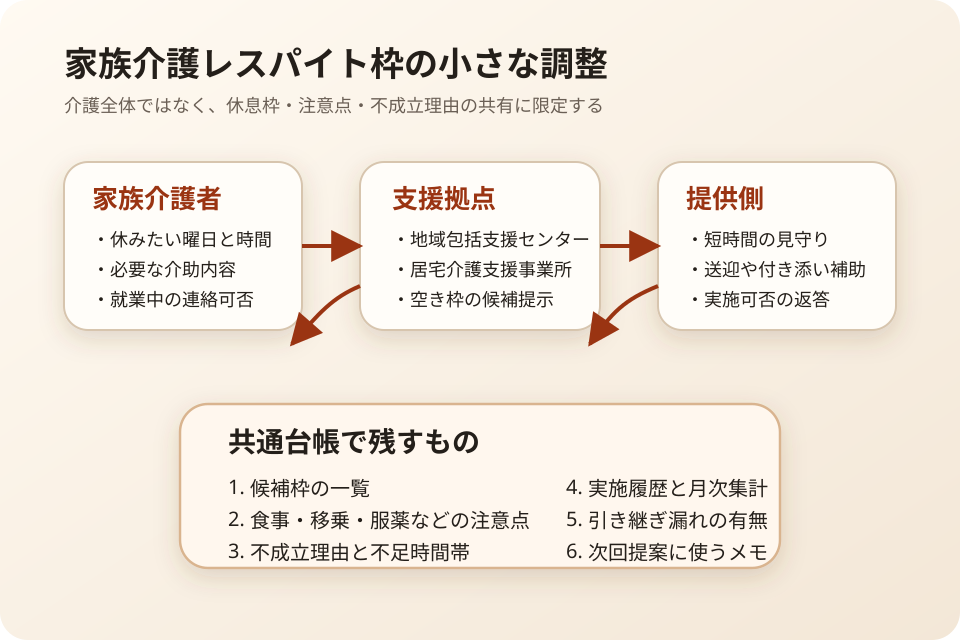

Question Note
家族介護のレスパイト枠と引き継ぎ漏れを減らす小規模サービス案

全体像
高齢化が進み、在宅で暮らし続ける高齢者を地域で支える必要は増えています。一方で家族介護は、誰かが常に付き添う重い仕事だけではなく、通院日、デイサービスの空き、短時間の見守り、急な代替手配がずれることで一気に疲弊しやすい運営問題でもあります。
狙いは、社会課題全体を解くことではなく、地域包括支援センター、居宅介護支援事業所、小規模事業者が扱う家族介護向けレスパイト枠の調整と引き継ぎ記録に絞ることです。
どの社会問題を切り出すか
| 現場課題 | 何が起きるか | 既存手段の限界 |
|---|---|---|
| 休める時間が直前まで確定しない | 介護者が仕事や通院予定を動かせず、結局自分で抱え込む。 | 電話と紙台帳では空き枠、候補者、保留理由が一覧で残りにくい。 |
| 引き継ぎ事項が散る | 食事、移乗、服薬、緊急連絡先の確認が担当ごとに抜ける。 | 一般の予約ツールは介護時の注意点や家族メモを軽く扱いにくい。 |
| 家族介護者の疲労が見えにくい | 限界が来るまで支援要請が遅れ、介護離職やサービス中断につながる。 | 制度案内はあっても、短時間レスパイトの運用実績まで追えない。 |
既存の仕組みで足りない点
- 地域包括ケアでは医療、介護、生活支援の連携が求められるが、短時間の休息枠を回す日次オペレーションは現場任せになりやすい。
- 介護保険や地域支援制度の説明資料は多いが、家族介護者が「今週どこで2時間休めるか」を即決する台帳にはなりにくい。
- 仕事と介護の両立支援は制度周知が中心で、地域事業者側の受け皿管理までは埋まっていない。
サービス案
家族介護向けの短時間レスパイト枠を、候補枠、必要ケア、引き継ぎメモ、実施履歴まで一つの画面で軽く回せるようにします。
- 2時間、4時間、半日などのレスパイト枠を定型メニューで登録する。
- 見守り、移動補助、食事介助、服薬声かけなどの必要対応をチェック式で共有する。
- 家族介護者の希望曜日、緊急度、就業中の連絡可否をメモする。
- 不成立理由を残し、どの曜日や時間帯で供給不足かを見える化する。
- 月次で利用実績、調整件数、引き継ぎ漏れ件数をCSV出力する。
100万円規模に抑えた市場設定
初年度は1県内または近接2市の地域包括支援センター、居宅介護支援事業所、小規模介護事業者40拠点を到達可能市場とし、その中から15拠点へ導入する前提にします。
| 項目 | 仮定 | 結果 |
|---|---|---|
| 到達可能市場 | 近接エリアの介護支援拠点40拠点 | 面談、初期設定、月次フォローを1人で回せる範囲 |
| 初年度導入 | 15拠点 | 紹介、勉強会、個別デモから獲得 |
| 月額利用料 | 5,000円 | 900,000円/年 |
| 導入支援 | 12,000円 x 8件 | 96,000円 |
| 初年度売上予想 | 合計 | 996,000円 |
収益モデル
- 基本: 拠点ごとの月額利用料
- 追加: 初期設定、既存台帳の移行、帳票テンプレート調整
- 追加: 家族介護者向け説明会や事業所内ミニ研修
初期は成果報酬よりも、調整時間と引き継ぎ漏れを減らす固定課金の方が現場にも説明しやすいです。
必要なシステム要件と支出
| 領域 | 要件・使い道 | 年額の目安 |
|---|---|---|
| フロント | スマホで枠登録、状態変更、注意点確認ができるWeb画面 | 0円〜 |
| バックエンド | 利用者、枠、担当、メモ、履歴、権限を管理する | 36,000円 |
| 通知 | メール中心、急ぎの確認だけSMSや電話運用に回す | 18,000円 |
| 帳票・記録 | CSV、月次報告、監査ログ、簡易PDFを出力する | 18,000円 |
| 運用・確認 | ドメイン、バックアップ、説明資料、規約、個人情報の確認 | 88,000円 |
| 年間支出 | 合計 | 160,000円 |
システム費用は、事業所ごとの専用カスタマイズを避けて共通機能に寄せることが前提です。AI補助で画面、帳票、説明文を早く作れるぶん、費用の中心はホスティングより運用確認に置きます。
AIを使った開発見積もり
AIを使うと、業務フロー整理、CRUD画面、CSV出力、テストデータ、説明資料の初稿を短縮できます。一方で、家族介護の実務確認、個人情報の線引き、現場導入の受け入れ確認は人が責任を持つ必要があります。
| 作業 | AIで短縮できること | 目安 |
|---|---|---|
| 要件整理 | ヒアリングメモから画面項目と業務フローを整理 | 3〜4日 |
| プロトタイプ | 一覧、登録、引き継ぎメモ、月次集計のたたき台を作成 | 1〜2週間 |
| 本実装 | CRUD、通知、CSV、監査ログ、テストデータを補助 | 2〜3週間 |
| 検証・修正 | 入力漏れや引き継ぎ漏れの観点を洗い出す | 1週間 |
1人開発でも、初期版は4〜6週間で公開できる想定です。AI補助により、帳票のたたき台と導入説明資料の作成時間を特に削れます。
売上・支出・利益
売上 - 支出 = 利益
| 項目 | 金額 | 補足 |
|---|---|---|
| 売上 | 996,000円 | 月額5,000円 x 15拠点 x 12か月 + 導入支援96,000円 |
| 支出 | 160,000円 | ホスティング、通知、帳票、説明資料、個人情報確認 |
| 利益 | 836,000円 | 実行者の作業時間は別途。副業または小規模検証としては成立しやすい水準 |
必要人数と人材要件
この規模では、実行者1名 + 単発外注を前提にします。
- 実行者: Webアプリを実装でき、介護支援拠点へのヒアリングと導入伴走ができる人
- 外注: 会計、法務、個人情報保護、アクセシビリティ確認を単発依頼
- 望ましいスキル: CRUD実装、帳票設計、スマホUI、業務整理、地域連携の調整力
一人でできるのは、初期開発、共通設定、月次フォロー、定例改善までです。緊急時の電話代行や専門職判断そのものは外部に持つべきです。
リスクと最初の検証
- 本当に足りないのがシステムか、単純な供給不足かを見極める必要がある。
- 入力項目が多いと現場が紙と電話に戻るため、初期版は最小項目に絞る。
- 家族介護者の不安や疲労を扱うため、通知文面と責任範囲の説明を丁寧に設計する。
最初は3拠点、4週間だけ試し、枠不成立率、引き継ぎ漏れ、調整に使う時間がどれだけ減るかを見ます。
結論
このテーマは、介護全体を大きく置き換える事業ではなく、家族介護向けの短時間レスパイト枠を回す日次オペレーションに絞ると、100万円規模でも小さく検証しやすいです。地域包括ケアや仕事と介護の両立支援で語られる課題を、現場の予約と引き継ぎの実務に落とし込む切り方です。